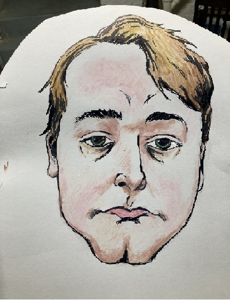

About Me

I am a 21 year old man who is currently attending Neumont College of Computer Science.
I have been pursuing a game degree for the last 2 years. But I also have Unity experience spanning about 5 years now.
Programming wise, I have been dabbling in programming concepts and ideas for 6 years.
I mainly program in C#, but have some experience in C++ and Java.
I like solving problems in code. I can take an abstract concept and make it work.
When I am given an assignment to complete, I am able to come up with a working prototype pretty quickly.
I like to create things I have seen as test projects, or features in my non-test projects.
Outside of programming, I have several interest that I pursue.
I like drawing, playing games, hanging out with friends, taking walks, and just learning things.
I have a unquenchable thirst for learning new things.
I puruse game development because there are so many different things to learn.